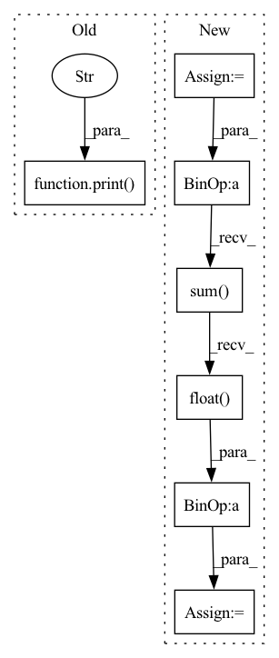

Pattern ID :39140
Before Change
print("loss: ", loss_list)
confidence = get_confidence(loss_list, self.attack.target_class)
print("confidence: " , confidence)
def get_potential_triggers(self) -> (torch.Tensor, torch.Tensor, torch.Tensor):
mark_list, mask_list, loss_list = [], [], []
// todo: parallel to avoid for loopAfter Change
print("mask_norms: ", mask_norms)
print("loss: ", loss_list)
detect_mask = mask_list[self.target_class] > 1e-2
sum_temp = detect_mask.int() + real_mask.int()
overlap = (sum_temp == 2).sum().float() / (sum_temp >= 1).sum().float()
print(f"Jaccard index: {overlap:.3f}")
def get_potential_triggers(self) -> (torch.Tensor, torch.Tensor, torch.Tensor):
mark_list, mask_list, loss_list = [], [], []In pattern: SUPERPATTERN
Frequency: 3
Non-data size: 7
Instances Fragment ID: 111342402
Project Name: ain-soph/trojanzoo
Commit Name: 6c5c8e1497a35b04b94df96e36657854ae08bc06
Time: 2020-09-18
Author: ain-soph@live.com
File Name: trojanzoo/defense/backdoor/neural_cleanse.py
M Class Name: Neural_Cleanse
N Class Name: Neural_Cleanse
M Method Name: detect(1)
N Method Name: detect(1)
M Parent Class: Defense_Backdoor
N Parent Class: Defense_Backdoor
M File Name: trojanzoo/defense/backdoor/neural_cleanse.py
N File Name: trojanzoo/defense/backdoor/neural_cleanse.py
M Start Line: 56
M End Line: 57
N Start Line: 51
N End Line: 60
Before Change
for i, data in enumerate(self.dataset.loader["test"]):
_input, _label = self.model.get_data(data)
entropy.update(self.defense.check(_input), n=_label.size(0))
print(f"{i:<10d}{entropy.avg:<20.4f}" )
def check(self, _input) -> float:
h = 0.0
for i, data in enumerate(self.dataset.loader["train"]):After Change
clean_entropy.append(self.check(_input))
poison_entropy.append(self.check(poison_input))
clean_entropy = torch.cat(clean_entropy).flatten().sort()[0]
poison_entropy = torch.cat(poison_entropy).flatten().sort()[0]
print("Entropy Clean Median: ", float(clean_entropy.median()))
print("Entropy Poison Median: ", float(poison_entropy.median()))
threshold_low = float(clean_entropy[int(0.025 * len(clean_entropy))])
threshold_high = float(clean_entropy[int(0.975 * len(clean_entropy))])
print(f"Threshold: ({threshold_low:5.3f}, {threshold_high:5.3f})")
percent = float(((poison_entropy < threshold_low)
+ (poison_entropy > threshold_high)).sum().float() / len(poison_entropy))
print("Classification Acc: ", percent)
def check(self, _input) -> torch.Tensor: Fragment ID: 111342416
Project Name: ain-soph/trojanzoo
Commit Name: 6db9e1093a1c57355371acded3524e02f64baa3a
Time: 2020-08-10
Author: ain-soph@live.com
File Name: trojanzoo/defense/backdoor/strip.py
M Class Name: STRIP
N Class Name: STRIP
M Method Name: detect(1)
N Method Name: detect(1)
M Parent Class: Defense_Backdoor
N Parent Class: Defense_Backdoor
M File Name: trojanzoo/defense/backdoor/strip.py
N File Name: trojanzoo/defense/backdoor/strip.py
M Start Line: 17
M End Line: 21
N Start Line: 18
N End Line: 34
Before Change
super().detect(**kwargs)
loss_list, norm_list = self.get_potential_triggers()
print("loss: ", loss_list) // DeepInspect use this)
print("mask norm: " , norm_list)
confidence = get_confidence(loss_list, self.attack.target_class)
print("confidence: ", confidence)
After Change
loss_list, mark_list = self.get_potential_triggers()
print("loss: ", loss_list) // DeepInspect use this)
detect_mask = mark_list[self.target_class] > 1e-1
sum_temp = detect_mask.int() + real_mask.int()
overlap = (sum_temp == 2).sum().float() / (sum_temp >= 1).sum().float()
print(f"Jaccard index: {overlap:.3f}")
def get_potential_triggers(self) -> (torch.Tensor, torch.Tensor):
mark_list, loss_list = [], [] Fragment ID: 111342405
Project Name: ain-soph/trojanzoo
Commit Name: 6c5c8e1497a35b04b94df96e36657854ae08bc06
Time: 2020-09-18
Author: ain-soph@live.com
File Name: trojanzoo/defense/backdoor/deep_inspect.py
M Class Name: Deep_Inspect
N Class Name: Deep_Inspect
M Method Name: detect(1)
N Method Name: detect(1)
M Parent Class: Defense_Backdoor
N Parent Class: Defense_Backdoor
M File Name: trojanzoo/defense/backdoor/deep_inspect.py
N File Name: trojanzoo/defense/backdoor/deep_inspect.py
M Start Line: 57
M End Line: 60
N Start Line: 55
N End Line: 62